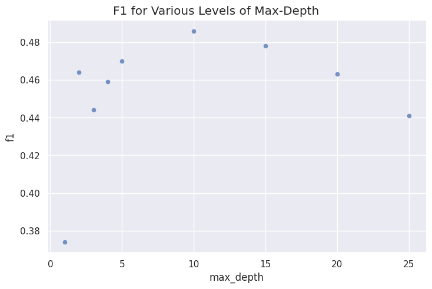
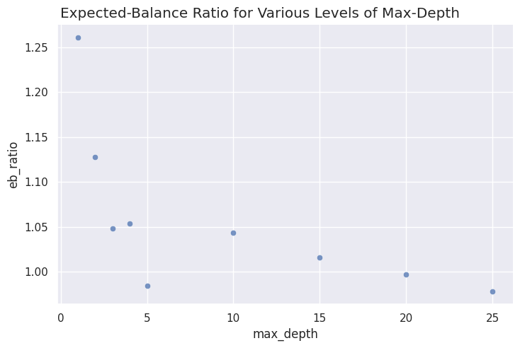
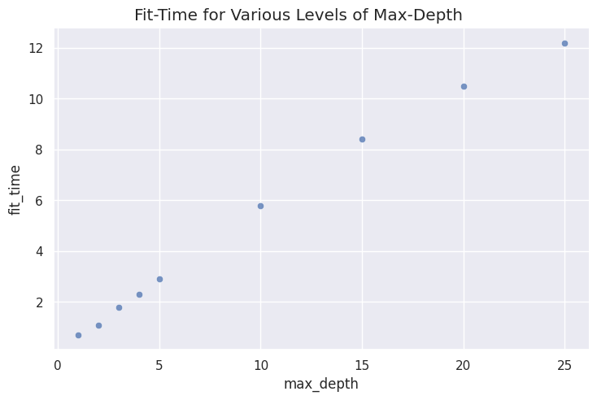

import pandas as pd
import numpy as np
import sklearn
import time
import seaborn as sns; sns.set()
import matplotlib.pyplot as plt34 Student Loan: Hyperparameter Tuning
The hyperparameters of a machine learning algorithm control its flexibility. Greater flexibility can be desirable because it allows the model to react to nuances of the data. However, too much model flexibility can also lead to overfitting. Therefore, it is sometimes preferable to restrict the flexibility of a model to reduce overfitting.
The trade-off between allowing for flexibility while at the same avoiding overfitting is referred to as the variance-bias tradeoff.
34.1 Loading Packages
Let’s begin by loading the packages that we will need.
34.2 Reading-In Data
Next, let’s read-in our data set.
df_train = pd.read_csv('../data/student_loan.csv')
df_train| load_id | deal_name | loan_age | cosign | income_annual | upb | monthly_payment | fico | origbalance | mos_to_repay | repay_status | mos_to_balln | paid_label | |
|---|---|---|---|---|---|---|---|---|---|---|---|---|---|
| 0 | 765579 | 2014_b | 56 | 0 | 113401.60 | 36011.11 | 397.91 | 814 | 51453.60 | 0 | 0 | 124 | 0 |
| 1 | 765580 | 2014_b | 56 | 1 | 100742.34 | 101683.38 | 1172.10 | 711 | 130271.33 | 0 | 0 | 124 | 0 |
| 2 | 765581 | 2014_b | 56 | 0 | 46000.24 | 49249.37 | 593.57 | 772 | 62918.96 | 0 | 0 | 124 | 0 |
| 3 | 765582 | 2014_b | 56 | 0 | 428958.96 | 36554.85 | 404.63 | 849 | 48238.73 | 0 | 0 | 125 | 0 |
| 4 | 765583 | 2014_b | 56 | 0 | 491649.96 | 7022.30 | 1967.46 | 815 | 106124.68 | 0 | 0 | 4 | 0 |
| ... | ... | ... | ... | ... | ... | ... | ... | ... | ... | ... | ... | ... | ... |
| 1043306 | 1808885 | 2019_c | 2 | 0 | 152885.00 | 115363.12 | 1212.22 | 798 | 116834.64 | 0 | 0 | 118 | 0 |
| 1043307 | 1808886 | 2019_c | 2 | 0 | 116480.00 | 77500.70 | 831.13 | 826 | 79566.03 | 0 | 0 | 118 | 0 |
| 1043308 | 1808887 | 2019_c | 2 | 0 | 96800.00 | 16156.76 | 232.34 | 781 | 16472.50 | 0 | 0 | 82 | 0 |
| 1043309 | 1808888 | 2019_c | 2 | 0 | 78400.14 | 77197.03 | 833.57 | 777 | 78135.54 | 0 | 0 | 118 | 0 |
| 1043310 | 1808889 | 2019_c | 65 | 0 | 50447.28 | 65667.85 | 767.10 | 765 | 82602.38 | 0 | 0 | 119 | 0 |
1043311 rows × 13 columns
We can inspect the columns of our data set with the DataFrame.info() method.
df_train.info()<class 'pandas.core.frame.DataFrame'>
RangeIndex: 1043311 entries, 0 to 1043310
Data columns (total 13 columns):
# Column Non-Null Count Dtype
--- ------ -------------- -----
0 load_id 1043311 non-null int64
1 deal_name 1043311 non-null object
2 loan_age 1043311 non-null int64
3 cosign 1043311 non-null int64
4 income_annual 1043311 non-null float64
5 upb 1043311 non-null float64
6 monthly_payment 1043311 non-null float64
7 fico 1043311 non-null int64
8 origbalance 1043311 non-null float64
9 mos_to_repay 1043311 non-null int64
10 repay_status 1043311 non-null int64
11 mos_to_balln 1043311 non-null int64
12 paid_label 1043311 non-null int64
dtypes: float64(4), int64(8), object(1)
memory usage: 103.5+ MB34.3 Organizing Our Features and Labels
Now that we have our data in memory, we can separate the features and labels in preparation for model fitting. We begin with the features.
lst_features = \
['loan_age','cosign','income_annual', 'upb',
'monthly_payment','fico','origbalance',
'mos_to_repay','repay_status','mos_to_balln',]
df_X = df_train[lst_features]
df_y = df_train['paid_label']And next we do the same for the labels. Note that in our encoding a 1 stands for prepayment, while a 0 stands for non-prepayment.
df_y = df_train['paid_label']
df_y0 0
1 0
2 0
3 0
4 0
..
1043306 0
1043307 0
1043308 0
1043309 0
1043310 0
Name: paid_label, Length: 1043311, dtype: int6434.4 sklearn.model_selection.KFold
Cross-validation techniques are a useful for estimating out-of-sample goodness of fit metrics for a model. Writing cross-validation code from scratch would involve a lot of boiler plate code, which basically amounts to lots of for-loops whose implementation yields very little insight.
One of great things about sklearn is that it contains a variety of convenience functions that take care a lot of this sort boiler-plate code for you.
A great example of such a convenience function is KFold() which produces arrays of indexes that define a K-Fold cross validation.
The following code returns an object that when applied to a data set will yield the indexes for the training set and test set for each iteration of a 2-fold cross validation.
from sklearn.model_selection import KFold
kf = KFold(n_splits = 2, shuffle = True, random_state = 0)We can use a for-loop to inspect these indexes:
for train_index, test_index in kf.split(df_X, df_y):
print("TRAIN:", train_index, "TEST:", test_index)TRAIN: [ 1 2 3 ... 1043303 1043307 1043309] TEST: [ 0 5 6 ... 1043306 1043308 1043310]
TRAIN: [ 0 5 6 ... 1043306 1043308 1043310] TEST: [ 1 2 3 ... 1043303 1043307 1043309]Research Challenge: Google sklearn.model_selection.StratifiedKFold and describe the difference between it and KFold().
Solution
# The folds are made by preserving the percentage of samples for each class.34.5 Choosing Optimal max_depth for DecisionTreeClassifier
Recall that the decision tree algorithm is a process that iteratively partitions the feature space. Specifically, for each iteration of the algorithm, a split is made along one particular dimension of the feature space. The process is repeated until some kind of stopping criteria is met.
The hyperparameters of a decision tree model control various criteria for stopping this iterative splitting process. The more strict the stopping criteria (i.e. stopping faster) the less flexible the model. The more lenient the stopping criteria (i.e. stopping slower) the more flexible the model.
Restricting the flexibility of a model by changing hyperparameters is also referred to as regularization.
In this section we demonstrate choosing an optimal max_depth value for a decision tree classifier on our student loan data. Towards this end we will use cross-validation.
Let’s import the functions that we will need.
from sklearn.tree import DecisionTreeClassifier
from sklearn.metrics import f1_scoreWe will use 10-fold cross-validation, so let’s invoke the required indexes with KFold.
kf = KFold(n_splits = 10, shuffle = True, random_state = 0)The following code calculates a 10-fold CV F1-score, expected-balance ratio, and average fit-time for various levels of max_depth.
# various levels of max_depth we will try
lst_depth = [1, 2, 3, 4, 5, 10, 15, 20, 25]
# lists for storing average statistics
lst_f1_avg = []
lst_eb_ratio_avg = []
lst_fit_time_avg = []
for ix_depth in lst_depth:
# list for storing statitics for each fold of cross-validation
lst_f1 = []
lst_eb_ratio = []
lst_fit_time = []
for train_index, test_index in kf.split(df_X, df_y):
# creating training set
X_train = df_X.iloc[train_index]
y_train = df_y.iloc[train_index]
# creating test set
X_test = df_X.iloc[test_index]
y_test = df_y.iloc[test_index]
# intantiating model
mdl = DecisionTreeClassifier(max_depth = ix_depth, random_state = 0)
# fit the model
start = time.time()
mdl.fit(X_train, y_train)
arr_pred = mdl.predict(X_test)
end = time.time()
# fit time
dbl_fit_time = end - start
lst_fit_time.append(dbl_fit_time)
# f1-score
dbl_f1 = f1_score(y_test, arr_pred)
lst_f1.append(dbl_f1)
# expected-balance ratio
arr_pred_proba = mdl.predict_proba(X_test)[:,1]
dbl_eb_ratio = (arr_pred_proba * X_test['upb']).sum() / (y_test * X_test['upb']).sum()
lst_eb_ratio.append(dbl_eb_ratio)
# calculating and storing average metrics
fit_time_avg = np.round(np.mean(lst_fit_time), 1)
lst_fit_time_avg.append(fit_time_avg)
f1_avg = np.round(np.mean(lst_f1), 3)
lst_f1_avg.append(f1_avg)
eb_ratio_avg = np.round(np.mean(lst_eb_ratio), 3)
lst_eb_ratio_avg.append(eb_ratio_avg)
# printing some output so I know my code is running
print(ix_depth)1
2
3
4
5
10
15
20
25Let’s put our results into a DataFrame, and then graph them.
df_results = pd.DataFrame({'max_depth':lst_depth, 'f1':lst_f1_avg, 'eb_ratio':lst_eb_ratio_avg, 'fit_time':lst_fit_time_avg})
df_results| max_depth | f1 | eb_ratio | fit_time | |
|---|---|---|---|---|
| 0 | 1 | 0.374 | 1.261 | 0.7 |
| 1 | 2 | 0.464 | 1.128 | 1.1 |
| 2 | 3 | 0.444 | 1.048 | 1.8 |
| 3 | 4 | 0.459 | 1.054 | 2.3 |
| 4 | 5 | 0.470 | 0.984 | 2.9 |
| 5 | 10 | 0.486 | 1.043 | 5.8 |
| 6 | 15 | 0.478 | 1.016 | 8.4 |
| 7 | 20 | 0.463 | 0.997 | 10.5 |
| 8 | 25 | 0.441 | 0.978 | 12.2 |
34.5.1 Graph of F1
%matplotlib inline
with sns.axes_style('darkgrid'):
g = sns.relplot(
x = 'max_depth',
y = 'f1',
data = df_results,
alpha = 0.75,
height = 5,
aspect = 1.5,
);
plt.subplots_adjust(top = 0.93);
g.fig.suptitle('F1 for Various Levels of Max-Depth');
34.5.2 Graph of Expected-Balance Ratio
with sns.axes_style('darkgrid'):
g = sns.relplot(
x = 'max_depth',
y = 'eb_ratio',
data = df_results,
alpha = 0.75,
height = 5,
aspect = 1.5,
);
plt.subplots_adjust(top = 0.93);
g.fig.suptitle('Expected-Balance Ratio for Various Levels of Max-Depth');
34.5.3 Graph of Fit Time
with sns.axes_style('darkgrid'):
g = sns.relplot(
x = 'max_depth',
y = 'fit_time',
data = df_results,
alpha = 0.75,
height = 5,
aspect = 1.5,
);
plt.subplots_adjust(top = 0.93);
g.fig.suptitle('Fit-Time for Various Levels of Max-Depth');
Discussion Question: Based on these results, which what would you choose for max_depth?
Solution
# I would probaby choose something in the 5-10 range.